ユーザーガイド
おさかなキーボードをお買い求めいただき、ありがとうございます。
使い方を説明させてください。
warning使用上の注意
液体や粉塵をかけたり、高温になる場所に放置したり、強い力や衝撃を与えないでください。接触不良やバッテリーの発火を起こす可能性があります。
直射日光に長期間当てないでください。筐体とキーキャップは紫外線で硬化するレジンでできているため、変色・ひび割れを起こす可能性があります。
日本国外で電源を入れないでください。組み込みモジュールの転記で技適認証を省略できる国は日本くらいなので、違法電波となる可能性があります。

使い始める
二匹を向かい合うように置き、それぞれの下アゴの陰にある灰色の電源スイッチを上に切り替えます。

パソコンからBluetooth機器の管理画面を開き、「Fish Keyboard」が表示されたら接続します。
入力方式の指定を求められた場合はANSI（US配列）を選択します。

適当なキーを押して、入力が通っているか確かめます。
動作確認がしやすいテスターページもご活用ください。
infoデフォルトキーマップ
開封時点では以下のようなキーマップが設定されています（購入時期によって若干異なる場合があります）。
普通にキーを押すと青字が入ります。英字の並びは大西配列です。
AとO、TとNを同時に押すとそれぞれ日本語IMEのオフ、オンが入ります。
長押しすると背景の修飾キーが入ります。
OやTを長押しするとShiftが、AやNを長押しするとAlt/Optionが、IやSを長押しするとWindows/Command/Metaが、EnterやTabを長押しするとControlが入ります。
BackSpaceを長押しするとレイヤー１（黄色字）が、Spaceを長押しするとレイヤー２（赤字）が、その両方の長押し中はレイヤー３（灰色字）が有効化します。
これらの複合キーは、短く押した直後に長押しすれば短打側の長押しが入ります。
レイヤー３（灰色字）にはいくつか特殊なキーがあります。
BT Sel 0~4は、その番号に登録された（なければ新規）機器とBluetooth接続を試みます。
BT Clearは現在接続中の、BT Clear Allはすべての機器とのペアリング情報を削除します。
USB↔︎BTは、親機充電中に出力先をUSBからBluetoothに切り替え、再度押すと戻します。これはACアダプターなど、接続したい機器以外から給電している場合に便利です。
Win↔︎Macは、macOS向けのキーマップを有効化します。具体的には以下のように、Command/Windows/MetaとControlの位置を入れ替え、photo_cameraの中身をPrintScreenから⇧⌘3に変えます。再度押すか電源が切れるとWindows用のキーマップに戻ります。
これらは、キーマップを変えるの手順で自由に書き換えることができます。
充電する

USB Type-Cケーブル（別売り）を用意し、電源スイッチを入れた状態でパソコンと有線接続します。
うまく充電できていれば、口の横が緑色に光ります。
USB接続と電源スイッチの入切によって、おさかなは以下のように動作します。
| USB接続あり | USB接続なし | |
| 電源 オン |
バッテリーを充電しながら動作します。親機ならUSBに入力しますが、USB↔︎BTキーでBlueTooth入力にも切り替えられます。 | バッテリー電源で動作し、Bluetoothで入力します。通常はこの状態で使用してください。 |
| 電源 オフ |
USB電源で動作し、USBに入力します。ただし、子機はどんな場合でもBluetoothで親機に入力を伝えようとします。 | 動作しません。長時間使用しないときはこの状態にしてください。 |
info親機と子機

おさかなキーボードには親機と子機があります。
子機は親機に入力を伝え、親機がそれを合わせた入力をパソコンに伝えます。
このため、親機のみ電源を入れて使うことはできますが、逆はできません。
左手デヴァイスとしての使用を考え、出荷時は左手を親機に設定しています。
また、同様の理由から、子機は親機の４倍ほど充電が長持ちします。
一部のOSで確認できる電池残量は親機のもので、子機の充電残量を確認する方法はありませんが、親機のついでに充電してあげてください。
キーマップを変える
方法１：ZMK Studio
ZMK Firmwareの公式リマップツールであるZMK Studioを使う方法です。開発途上のため一部の機能が制限されていますが、ブラウザー上でリアルタイムにキーマップを更新できて簡便です。
最新版のGoogle ChromeまたはMicrosoft EdgeでZMK Studioにアクセスし、パソコンに親機を有線接続した状態で「USB」をクリックして「Fish Keyboard」に接続します。
「Unlock to Continue」というダイヤログが表示されたら、Studio Unlockが割り当てられたキーを押して（既定は左手下段４キーの同時押し）、編集画面に入ります。
配列図からキーを選択して割り当てを編集したら、右上の「save」をクリックしておさかなに読み込ませます。実際にキーマップが更新されていることをテスターなどで確かめてください。
infoアプリ版ZMK Studio
無線接続中もキーマップを更新できるネイティヴアプリ版ZMK Studioもあります。
方法２：キーマップエディター
おさかなキーボード公式のキーマップエディターを使う方法です。ほぼ全ての機能が視覚的に設定できますが、ビルドに数分、焼き込みにもひと手間かかります。
warningStudio対応状況
2025年3月現在、キーマップエディターのビルド機能を使って生成されるファームウェアはZMK Studioに対応していません。この断絶は今後、キーマップエディターのビルド機能の更新や、ZMK Studioのキーマップファイル読み込み機能の実装によって解消される見込みです。
キーマップエディターでキーマップを作成し、右下のボタンからファームウェアを生成・ダウンロードします。
おさかなの両機の電源を切り、親機だけをパソコンとUSB接続します。
その状態で、上顎の陰にある白いリセットボタンを素早く２回押す、もしくはBoot Resetが割り当てられたキーを押します（既定は上顎＋下顎＋しっぽの同時押し）。
パソコン側にXIAO-SENSEという名前の外部記憶ディスクが出現したら、親機側のファームウェア（左手ならleft.uf2）をその中にコピーします。
完了してディスクが消えたら両機の電源を入れ、新しいキーマップで動作することをテスターなどで確認してください。
info無視できるエラー
ファームウェアを更新するとき、ファイルの転送やディスクの取り出しに関するエラーが出ることがありますが、通常は無視して大丈夫です。
（参考：Troubleshooting｜ZMK Docs）
info親機を変える場合
ファームウェアの設定で親機の左右を変えた場合は、両方のおさかなの完全なリセットが必要です。一度リセットファームウェアを読み込ませたあと正しいファームウェアを読み込ませる、という操作を両機に行なってください。
（参考：Split Keyboard Halves Unable to Pair｜ZMK Docs）
方法３：Githubリポジトリ
ZMK Firmwareの伝統的なリマップ手順です。すべてを文字で記述しなければなりませんが、もっとも確実で、あらゆる自由なカスタマイズが可能です。

Githubのアカウントを用意し、おさかなキーボードの設定リポジトリをフォークします。

作成したリポジトリのconfig/boards/shields/fishを開き、fish.keymap（必要ならfish.confやKconfig.defconfigも）を編集してcommitします。
名前を変えて複数の.keymapファイルを置いておくこともできますが、有効なのはfish.keymapという名前の１つだけです。

リポジトリの内容を更新すると、Githubが自動的にファームウェアの生成を始めます。
数分待つとactionsタブからfirmware.zipがダウンロードできるようになるので、これを解凍して前項と同様の手順でおさかなに読み込ませます。
こんなときは
パソコンにBluetooth接続できない
充電切れの可能性があるなら、充電してみてください。
他のホストに接続中の可能性があるなら、BT Sel 1~5（空いているプロファイル番号）を押すか、BT ClearまたはBT Clear Allで現在のペアリングを解放し、おさかなをペアリングモードに入れてください。
infoペアリングの解除
Bluetoothのペアリングを解除するには、キーボード側からもパソコン側からもプロファイル情報を削除する必要があります。
まず、解除したいプロファイルに接続した状態でBT Clear（すべて削除したい場合はBT Clear All）を押して、Bluetooth接続が切れたのを確認します。
その後、パソコンのBluetooth設定からもおさかなの登録を削除します。
キーマップと違う記号が入力される
「:」が「+」になったり「_」が「=」になったりするなら、パソコン側で外部キーボードの入力方式をJISからANSI（US配列）に変更してください。
JIS方式から変えたくない場合は、JIS方式用に翻訳したキーマップを設定してください。デフォルトキーマップのJIS版はエディターのプリセットから選べます。
（参考：ANSI→JISキーコード対応表 by eswaiさん）
info記号入力のひみつ
外部キーボードの通信規格には記号を直接入れるコードが存在しないため、たとえばおさかなで「!」を設定したキーを押しても、それは「左Shift + 1」を一瞬で押したことにしているに過ぎません。
しかし、一部のキーの有無やシフト変化は入力方式（ANSI/ISO/JIS）によって異なるため、このような不具合が起こります。
接続が悪くなるときがある
キーによらず一時的に入力ができなくなったり、繰り返されたり、遅くなったりするなら、Bluetoothの電波が干渉しているかもしれません。周辺の無線機器の電波を切るか、おさかなを有線接続にしてみてください。
子機が入力できなくなった
更新するファームウェアの左右を間違えた、または親機の左右を変えた直後なら、一度リセットファームウェアを読み込ませたあと正しいファームウェアを読み込ませる、という操作を両機に行なってください。
（参考：Split Keyboard Halves Unable to Pair｜ZMK Docs）
充電ができない
電源スイッチを入れた状態でパソコンやACアダプターにUSB接続しても緑の光がつかないなら、修理を申請してください。
キーが反応しない
キーコードの割り当てによらず反応しない・反応が悪いキーがあるなら、修理を申請してください。
サポートと修理
キーマップや使用法についての情報交換をしたいときや、不具合の対処に助けが必要なときは、公式Discordコミュニティのサポートフォーラムで検索・投稿してください。
修理を申請したいときは、Discordで大西拓磨（takuma_onishi）にDMするか、support@o24.worksにメールしてください。
このサイトやデフォルトファームウェアに問題を見つけたときは、それぞれのGitHubリポジトリ（サイト／ファームウェア）にプルリクエストを送るか、Discordで共有してください。